4130B94 DUPLEX PIPES from cooling coil or heat exchanger radiator - R.R.
- Path
- Procedures > 41 STEERING > 4130 POWER ASSISTED STEERING > 4130B POWER STEERING HYDRAULIC SYSTEM > 4130B94 DUPLEX PIPES from cooling coil or heat exchanger radiator - R.R.
- Kind
- repair procedure (removal / refitting; the operation number is the code)
- Applies to
- all engines; all production periods
- Interactive page
- https://sloeber94.github.io/elrnDB-lThss/en/#/174930
Applies to: engines: 3.0 V6, 3.2 V6; all production periods
 Removing
Removing
 Refitting
Refitting- Working from inside the vehicle, follow the instructions below making sure that the wheels are perfectly straight and that the ignition key is not inserted:
1. Undo the bolts fixing the trim under the dashboard, driver's side.
2. Remove the trim under the dashboard, driver's side.
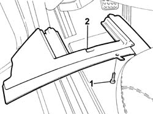
Applies to: engines: 3.0 V6, 3.2 V6; all production periods
1. Release the steering column universal joint (1a) undoing the fixing bolt (1b).
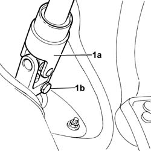
Applies to: engines: 3.0 V6, 3.2 V6; all production periods
- Position the vehicle on a lift.
- Open the boot, remove the cover on the left hand side and disconnect the negative battery lead.
See in Op. 4450B04 Right FRONT WHEEL (one) - R.R.
See in Op. 4450B02 Left FRONT WHEEL (one) - R.R.
- Raise the vehicle on the lift.
See in Op. 7055B54 PROTECTION/GUARD under engine - R.R.
See in Op. 7055B64 Engine compartment DUST SEAL in front wheel arch (one), left or right - R.R.
See in Op. 7055B42 FRONT WHEEL ARCH LINER (one), left or right - R.R.
- PR5050A12 Windscreen washer fluid reservoir (in engine bay) - r+r
See in Op. 1088B10 Engine coolant SUPPLY RESERVOIR - R.R.
See in Op. 1008C10 Power unit REACTION ROD - Replace
See in Op. 1048A21 AIR INLET HOSE FROM INTAKE TO FILTER - R.R.
See in Op. 1048A28 vacuum air circuit resonator pipe - r+r
See in Op. 1016A42 LEFT CYLINDER HEAD IGNITION COIL COVER - R.R.
See in Op. 1048A23 Cold AIR INTAKE for air filter - R.R.
See in Op. 1048A11 COMPLETE AIR FILTER -R.R.
See in Op. 1088E10 Radiator cooling FAN - R.R.
1. Release the air conditioning system pipe (1b) from the retaining spring (1a) on the frame.
2. Undo the nuts (2a) fixing the coolant radiator mounting plates (2a) on the frame.
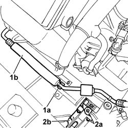
Applies to: engines: 3.0 V6, 3.2 V6; all production periods
1. Open the bands (1a) retaining the power assisted steering pipes (1b) to the heat exchanger (1c) and disconnect them.
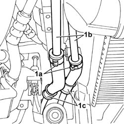
Applies to: engines: 3.0 V6, 3.2 V6; all production periods
1. Undo the two fixing nuts (1a) and remove the air filter casing mounting bracket (1b).
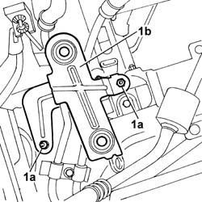
Applies to: engines: 3.0 V6, 3.2 V6; all production periods
1. Undo the nuts (1a) fixing the flanges for the pipes (1b) between the pre-catalyzers and the catalyzer and remove the actual pipes complete with the gaskets underneath.
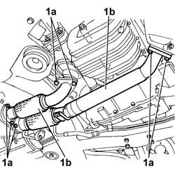
Applies to: engines: 3.0 V6, 3.2 V6; all production periods
1. Working on the gearbox side, disconnect the electrical connection (1a) for the servotronic actuator (1b) located on the steering box.
 | Description | Connector |
|---|---|---|
1a | Servotronik solenoid valve | L070 |
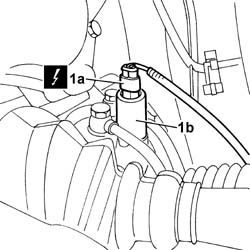
Applies to: engines: 3.0 V6, 3.2 V6; all production periods
- Secure the engine coolant radiator to the bodyshell, as appropriate.
1. With the vehicle raised, undo the bolts (1a) fixing the bumper (1b) to the radiator mounting brackets, then remove the actual brackets.
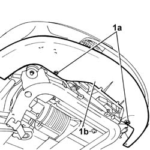
Applies to: engines: 3.0 V6, 3.2 V6; all production periods
- Position a container for collecting the power assisted steering fluid
1. Position the tool for supporting the power unit-chassis assembly (1a), complete with hydraulic jack, under the housings in the engine support frame (1b).
 | Description | Code | Function |
|---|---|---|---|
1a | Power unit support frame | 1.870.835.000 | Removing-refitting power unit |
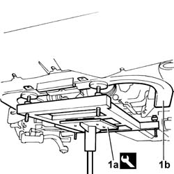
Applies to: engines: 3.0 V6, 3.2 V6; all production periods
1. Undo the two rear bolts (1a) and the front bolt (1b) fixing each of the two rear engine mounting brackets (1c).
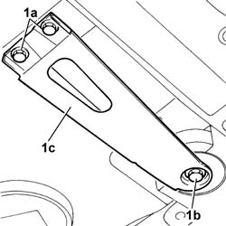
Applies to: engines: 3.0 V6, 3.2 V6; all production periods
1. Undo the two front bolts (1a) fixing the frame (1b) to the bodyshell.
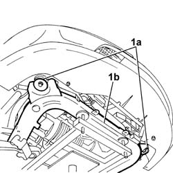
Applies to: engines: 3.0 V6, 3.2 V6; all production periods
1. Partly lower the jack and undo the connector (1a) for the supply pipe (1b) from the steering box to the heat exchanger.
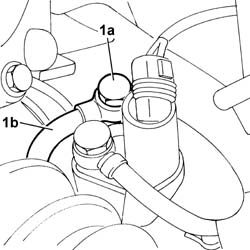
Applies to: engines: 3.0 V6, 3.2 V6; all production periods
1. Open the band (1a) retaining the return pipe (1b) from the heat exchanger to the reservoir.
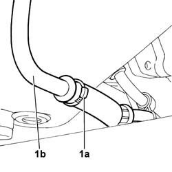
Applies to: engines: 3.0 V6, 3.2 V6; all production periods
1. Undo the nut (1a) fixing the rear bracket (1b) retaining the pipes.
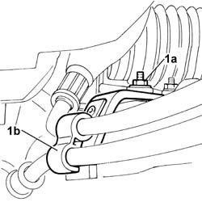
Applies to: engines: 3.0 V6, 3.2 V6; all production periods
1. Undo the nut (1a) fixing the front bracket (1b) retaining the pipes.
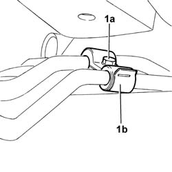
Applies to: engines: 3.0 V6, 3.2 V6; all production periods
1. Remove the duplex pipes.
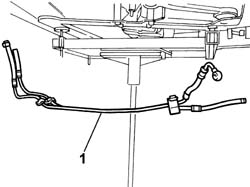
Applies to: engines: 3.0 V6, 3.2 V6; all production periods
Refitting
Removing- Position the duplex pipes.
1. Tighten the nut (1a) fixing the front bracket (1b) retaining the pipes to the recommended torque.
 | Value - daNm | Fastening | Component | Ø |
|---|---|---|---|---|
1a | 0,6 | Nut | PIPE POWER ASSISTED STEERING BOX/HEAT EXCHANGER | M6 |
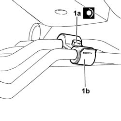
Applies to: engines: 3.0 V6, 3.2 V6; all production periods
1. Tighten the nut (1a) fixing the rear bracket (1b) retaining the pipes to the recommended torque.
| Value - daNm | Fastening | Component | Ø |
|---|---|---|---|---|
1a | 0,6 | Nut | PIPE POWER ASSISTED STEERING BOX/HEAT EXCHANGER | M6 |
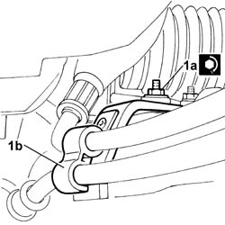
Applies to: engines: 3.0 V6, 3.2 V6; all production periods
- Close the band (1a) retaining the return pipe (1b) from the heat exchanger to the reservoir.
Applies to: engines: 3.0 V6, 3.2 V6; all production periods
1. Tighten the connector (1a) for the supply pipe (1b) from the steering box to the heat exchanger to the recommended torque then raise the jack.
| Value - daNm | Fastening | Component | Ø |
|---|---|---|---|---|
1a | 3 | Connector | PIPE POWER ASSISTED STEERING BOX/HEAT EXCHANGER | M12 X 1.5 |
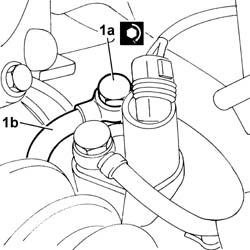
Applies to: engines: 3.0 V6, 3.2 V6; all production periods
1. Tighten the two front bolts (1a) fixing the frame (1b) to the bodyshell to the recommended torque.
| Value - daNm | Fastening | Component | Ø |
|---|---|---|---|---|
1a | 13 | Bolt | FRONT SUSPENSION SUBFRAME | M12 X 1.25 |
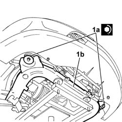
Applies to: engines: 3.0 V6, 3.2 V6; all production periods
1. Tighten the two rear bolts (1a) and the front bolt (1b) fixing each of the two rear engine mounting brackets (1c).
| Value - daNm | Fastening | Component | Ø |
|---|---|---|---|---|
1a | 5 | Bolt | FRONT SUSPENSION SUBFRAME | M10 X 1.25 |
| Value - daNm | Fastening | Component | Ø |
|---|---|---|---|---|
1b | 13 | Bolt | FRONT SUSPENSION SUBFRAME | M12 X 1.25 |
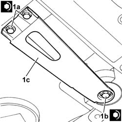
Applies to: engines: 3.0 V6, 3.2 V6; all production periods
- Remove the tool supporting the power unit - chassis assembly
- With the vehicle raised, position the radiator mounting brackets, then tighten the bolts fixing the bumper to the mounting brackets.
- Position the radiator on the mounting brackets.
- Working on the gearbox side, connect the electrical connection for the servotronic actuator located on the steering box.
| Description | Connector |
|---|---|---|
Servotronik solenoid valve | L070 |
1. Position the pipes between the pre-catalyzers and the catalyzer, complete with seals, then tighten the nuts (1a) fixing the pipe flanges (1b) to the recommended torque.
| Value - daNm | Fastening | Component | Ø |
|---|---|---|---|---|
1a | 2.8 | Nuts | EXHAUST PIPE MOUNTS/FASTENERS | M8 |
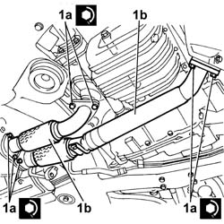
Applies to: engines: 3.0 V6, 3.2 V6; all production periods
1. Position the air filter casing mounting bracket (1b), then tighten the two fixing nuts (1a) to the recommended torque.
| Value - daNm | Fastening | Component | Ø |
|---|---|---|---|---|
1a | 0.5 | Nut | AIR CLEANER CASE MOUNT | M6 |
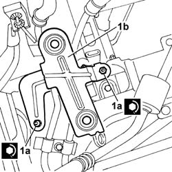
Applies to: engines: 3.0 V6, 3.2 V6; all production periods
- Connect the power assisted steering pipes to the heat exchanger, then close the retaining bands.
1. Secure the air conditioning system pipe (1b) to the retaining spring (1a) on the frame.
2. Tighten the nuts (2a) fixing the coolant radiator mounting plates (2a) on the frame to the recommended torque.
| Value - daNm | Fastening | Component | Ø |
|---|---|---|---|---|
2a | 0.5 | Nut | COOLANT RADIATOR SUPPORT BEAM | M6 |
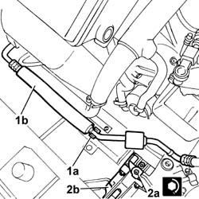
Applies to: engines: 3.0 V6, 3.2 V6; all production periods
See in Op. 1088E10 Radiator cooling FAN - R.R.
See in Op. 1048A11 COMPLETE AIR FILTER -R.R.
See in Op. 1048A23 Cold AIR INTAKE for air filter - R.R.
See in Op. 1016A42 LEFT CYLINDER HEAD IGNITION COIL COVER - R.R.
See in Op. 1048A28 vacuum air circuit resonator pipe - r+r
See in Op. 1048A21 AIR INLET HOSE FROM INTAKE TO FILTER - R.R.
See in Op. 1008C10 Power unit REACTION ROD - Replace
See in Op. 1088B10 Engine coolant SUPPLY RESERVOIR - R.R.
- PR5050A12 Windscreen washer fluid reservoir (in engine bay) - r+r
See in Op. 7055B42 FRONT WHEEL ARCH LINER (one), left or right - R.R.
See in Op. 7055B64 Engine compartment DUST SEAL in front wheel arch (one), left or right - R.R.
See in Op. 7055B54 PROTECTION/GUARD under engine - R.R.
- Lower the vehicle
See in Op. 4450B02 Left FRONT WHEEL (one) - R.R.
-
See in Op. 4450B04 Right FRONT WHEEL (one) - R.R.
- Connect the negative battery lead, then close the boot.
- Tighten the bolt fixing the steering column to the steering box to the recommended torque.
| Value - daNm | Fastening | Component | Ø |
|---|---|---|---|---|
2 | Bolt | STEERING SHAFT MOUNTING | M8 |
- Remove the vehicle from the lift.
See in Op. 0010T70 POWER ASSISTED STEERING FLUID - Replace
-
Applies to: engines: 2.0 TB, 2.4 20V, 2.4 JTD 10V, 2.4 JTD 20V; all production periods
Removing
Refitting- Position the vehicle on a lift.
See in Op. 7040D50 ENGINE COMPARTMENT UPPER SOUND INSULATION SHIELD - R.R.
Applies to: engines: 2.4 JTD 20V; all production periods
See in Op. 7055B54 PROTECTION/GUARD under engine - R.R.
See in Op. 1016A10 SOUND-PROOFING COVER - R.R.
See in Op. 1048B44 RIGID air supply PIPE from heat exchanger to intake manifold - R.R.
See in Op. 1048A56 UPPER RESONATOR - R.R.
See in Op. 1048A50 air inlet pipe to turbocharger - r + r
See in Op. 1048A21 AIR INLET HOSE FROM INTAKE TO FILTER - R.R.
Applies to: engines: 2.4 20V; all production periods
See in Op. 1048A28 vacuum air circuit resonator pipe - r+r
See in Op. 1048A21 AIR INLET HOSE FROM INTAKE TO FILTER - R.R.
Applies to: engines: 2.4 JTD 10V; all production periods
See in Op. 1048A21 Cold AIR INTAKE PIPE for air filter - R.R.
Applies to: engines: 2.0 TB; all production periods
See in Op. 1048A50 air inlet pipe to turbocharger - r + r
See in Op. 1048A21 AIR INLET HOSE FROM INTAKE TO FILTER - R.R.
Applies to: engines: 2.0 TB, 2.4 20V, 2.4 JTD 10V, 2.4 JTD 20V; all production periods
- Release the pipes from the plastic retaining bands.
1. Release the air conditioning system pipe (1a) from the band (1b).
2. Undo the nuts fixing the air filter mounting bracket.
3. Disconnect the duplex pipes (3a) from the cooling coil (3b).
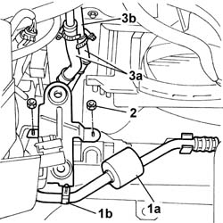
Applies to: engines: 2.0 TB, 2.4 20V, 2.4 JTD 10V, 2.4 JTD 20V; all production periods
See in Op. 7055B54 PROTECTION/GUARD under engine - R.R.
See in Op. 4450B02 Left FRONT WHEEL (one) - R.R.
See in Op. 7055B42 FRONT WHEEL ARCH LINER (one), left or right - R.R.
1. Undo the connector for the duplex pipe on the steering box.
2. Undo the nuts (2a) fixing the pipe mounting brackets (2b) to the suspension crossmember.
3. Disconnect the flexible pipe from the rigid pipe behind the steering box.
4. Remove the duplex pipes from the lower part of the vehicle.
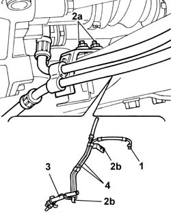
Applies to: engines: 2.0 TB, 2.4 20V, 2.4 JTD 10V, 2.4 JTD 20V; all production periods
Refitting
Removing- Position the duplex pipes in the housing on the crossmember.
- Tighten the nuts fixing the pipe mounting brackets to the suspension crossmember.
- Tighten the connector for the duplex pipe on the steering box.
| Value - daNm | Fastening | Component | Ø |
|---|---|---|---|---|
. | 1.5 | Nut | PIPE POWER ASSISTED STEERING BOX/HEAT EXCHANGER | M8 |
- Connect the flexible pipe to the rigid pipe.
See in Op. 7055B42 FRONT WHEEL ARCH LINER (one), left or right - R.R.
See in Op. 4450B02 Left FRONT WHEEL (one) - R.R.
See in Op. 7055B54 PROTECTION/GUARD under engine - R.R.
- Connect the duplex pipes to the cooling coil.
- Fit the air filter mounting bracket and tighten the fixing nuts.
- Secure the air conditioning system pipe to the air filter mounting bracket.
Applies to: engines: 2.4 JTD 10V; all production periods
See in Op. 1048A10 AIR FILTER CASING - R.R.
See in Op. 1048A21 Cold AIR INTAKE PIPE for air filter - R.R.
Applies to: engines: 2.4 20V; all production periods
See in Op. 1048A10 COMPLETE AIR FILTER -R.R.
See in Op. 1048A21 AIR INLET HOSE FROM INTAKE TO FILTER - R.R.
Applies to: engines: 2.0 TB; all production periods
See in Op. 1048A10 COMPLETE AIR FILTER -R.R.
See in Op. 1048A21 AIR INLET HOSE FROM INTAKE TO FILTER - R.R.
Applies to: engines: 2.4 JTD 20V; all production periods
See in Op. 1048A10 COMPLETE AIR FILTER -R.R.
See in Op. 1048A21 AIR INLET HOSE FROM INTAKE TO FILTER - R.R.
See in Op. 1048A50 air inlet pipe to turbocharger - r + r
See in Op. 1048A56 UPPER RESONATOR - R.R.
See in Op. 1048B44 RIGID air supply PIPE from heat exchanger to intake manifold - R.R.
Applies to: engines: 2.0 TB, 2.4 20V, 2.4 JTD 10V, 2.4 JTD 20V; all production periods
- Remove the vehicle from the lift.
- Refill the power assisted steering system using the appropriate fluid.
 | Description | Qty. | Component | Type | Classification |
|---|---|---|---|---|---|
. | TUTELA HP 20 | - | POWER ASSISTED STEERING CIRCUIT | Oil | ATF DEXRON III |
- Continue with the bleeding procedure following the instructions given below.
- With the front wheels raised off the ground and the engine switched off, carry out 4 or 5 complete rotations of the steering wheel (left and right).
- Check and, if necessary, top up the power assisted steering fluid level.
- Position the vehicle on the ground and start up the engine.
- Carry out 4 or 5 complete rotations of the steering wheel (left and right).
- If necessary, top up the power assisted steering fluid level.
See in Op. 7040D50 ENGINE COMPARTMENT UPPER SOUND INSULATION SHIELD - R.R.
Topics linked from this page (25)
- 0010T70 POWER ASSISTED STEERING FLUID - Replace
- 1008C10 Power unit REACTION ROD - Replace
- 1016A42 LEFT CYLINDER HEAD IGNITION COIL COVER - R.R.
- 1016A10 SOUND-PROOFING COVER - R.R.
- 1048A10 COMPLETE AIR FILTER -R.R.
- 1048A21 AIR INLET HOSE FROM INTAKE TO FILTER - R.R.
- 1048A50 air inlet pipe to turbocharger - r + r
- 1048A56 UPPER RESONATOR - R.R.
- 1048B44 RIGID air supply PIPE from heat exchanger to intake manifold - R.R.
- 1048A10 COMPLETE AIR FILTER -R.R.
- 1048A11 COMPLETE AIR FILTER -R.R.
- 1048A21 AIR INLET HOSE FROM INTAKE TO FILTER - R.R.
- 1048A23 Cold AIR INTAKE for air filter - R.R.
- 1048A28 vacuum air circuit resonator pipe - r+r
- 1048A50 air inlet pipe to turbocharger - r + r
- 1048A10 AIR FILTER CASING - R.R.
- 1048A21 Cold AIR INTAKE PIPE for air filter - R.R.
- 1088B10 Engine coolant SUPPLY RESERVOIR - R.R.
- 1088E10 Radiator cooling FAN - R.R.
- 4450B02 Left FRONT WHEEL (one) - R.R.
- 4450B04 Right FRONT WHEEL (one) - R.R.
- 7040D50 ENGINE COMPARTMENT UPPER SOUND INSULATION SHIELD - R.R.
- 7055B42 FRONT WHEEL ARCH LINER (one), left or right - R.R.
- 7055B54 PROTECTION/GUARD under engine - R.R.
- 7055B64 Engine compartment DUST SEAL in front wheel arch (one), left or right - R.R.